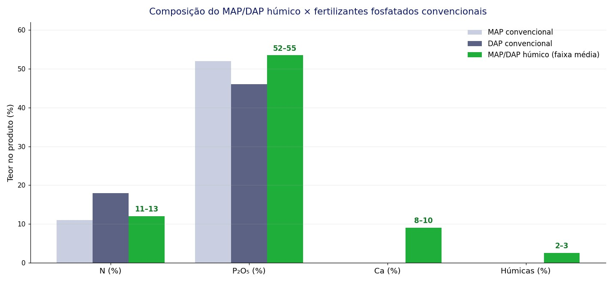
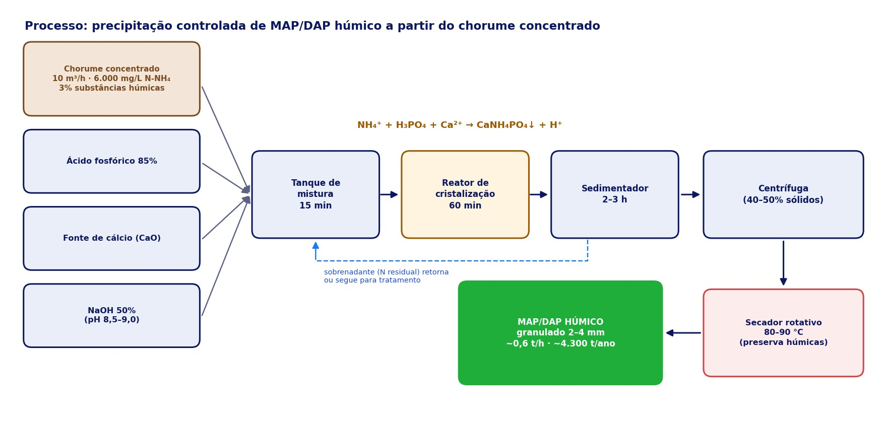
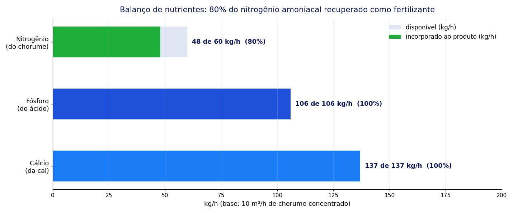
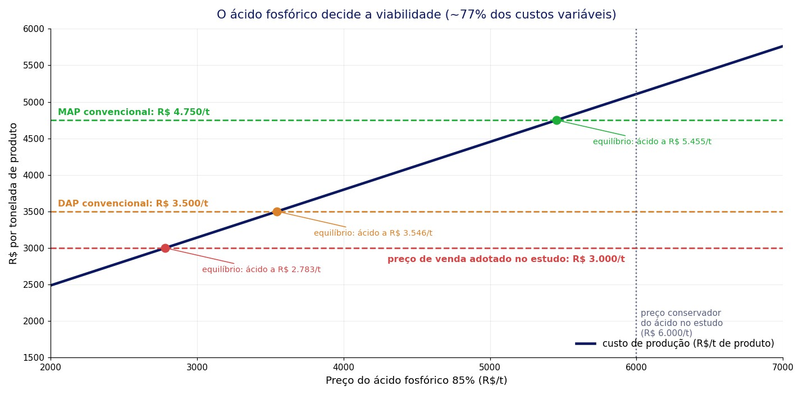
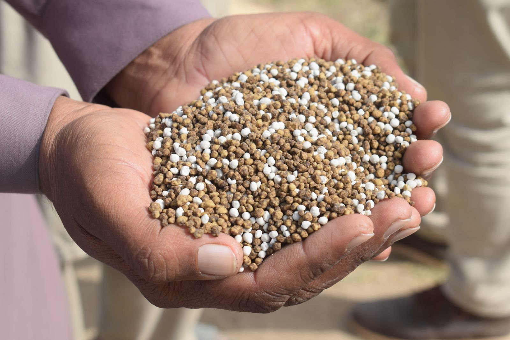
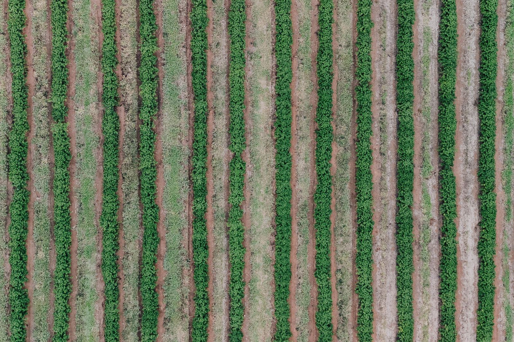
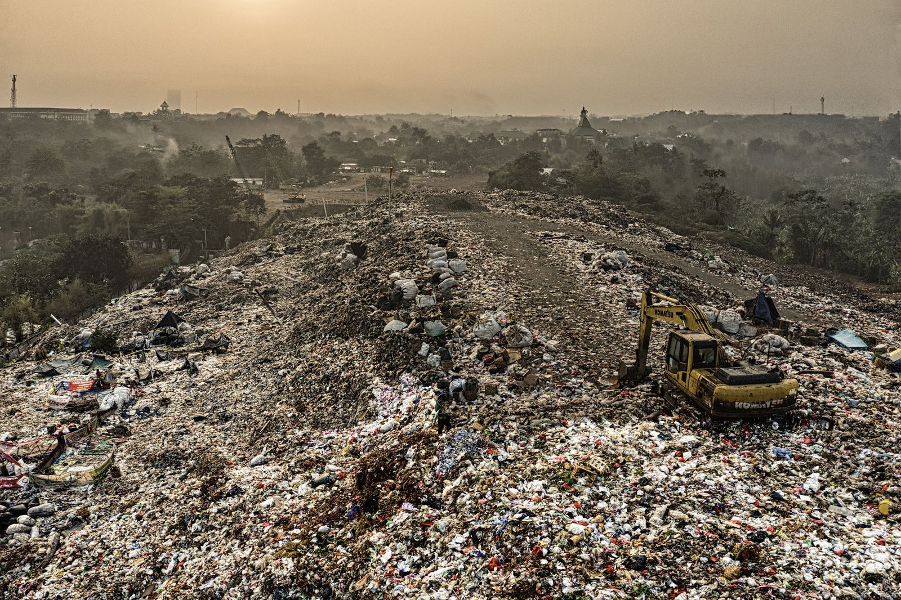

Problema / desafio do cliente
O chorume concentrado (rejeito da osmose reversa ou da evaporação do chorume de aterros) é um passivo ambiental de difícil tratamento, rico em nitrogênio amoniacal e em substâncias húmicas. Ao mesmo tempo, o Brasil é um dos maiores consumidores de fertilizantes do mundo e depende de importações para mais de 85% dos fosfatados.
A pergunta do estudo foi: é possível transformar o chorume concentrado em um fertilizante fosfatado de alto valor, recuperando seus nutrientes em vez de apenas tratá-lo?
Contexto e características do processo
- Chorume concentrado de aterro sanitário com cerca de 6.000 mg/L de N amoniacal, 3% de substâncias húmicas, pH 8,0–8,5 e DQO de 15.000 a 25.000 mg/L.
- Disponibilidade de projeto de 10 m³/h (cerca de 72.000 m³/ano), com custo zero ou negativo como matéria-prima.
- A recuperação de nutrientes por precipitação de fosfatos de amônio (MAP/DAP, estruvita) já opera em escala industrial na Europa e na América do Norte, e há pilotos com chorume de aterro em condições semelhantes.

Diagnóstico e dados analisados
- O nitrogênio amoniacal do chorume pode ser fixado como fosfato de amônio e cálcio por precipitação controlada.
- As substâncias húmicas do chorume, um problema no tratamento, viram um diferencial agronômico: melhoram a estrutura do solo, a CTC, a retenção de água e reduzem a fixação de fósforo.
- Usar ácido fosfórico como fonte de fósforo dispensa a digestão ácida exigida por fontes sólidas (como esterco), simplifica o processo e eleva a eficiência de precipitação.
- O ponto crítico identificado foi o custo do ácido fosfórico, que domina os custos variáveis.
Metodologia utilizada
- Caracterização do chorume concentrado e definição das matérias-primas (ácido fosfórico 85%, fonte de cálcio e NaOH).
- Revisão de experiências internacionais de recuperação de nutrientes de efluentes e de chorume.
- Concepção do processo e definição das condições de precipitação (pH, tempo de residência, temperatura e agitação).
- Balanço de massa e eficiências de recuperação de N, P e Ca.
- Especificação do produto e comparação com MAP e DAP convencionais.
- Análise econômica: CAPEX, OPEX, receitas e sensibilidade aos preços de insumos e de venda.
- Escala piloto para validar a precipitação e a qualidade do produto antes da escala industrial.
Solução de engenharia desenvolvida
O processo é uma linha única de precipitação controlada, em cinco etapas:

- Tanque de mistura (15 min): dosagem de ácido fosfórico, cal e NaOH para pH 8,5–9,0, à temperatura ambiente.
- Reator de cristalização (60 min): formação dos cristais de fosfato de amônio e cálcio e incorporação das substâncias húmicas por adsorção.
- Sedimentador (2–3 h): separação dos cristais; o sobrenadante com N residual retorna ou segue para tratamento.
- Centrífuga decanter: desaguamento até 40–50% de sólidos.
- Secador rotativo indireto a 80–90 °C, que preserva as húmicas, gerando granulado de 2–4 mm com 5–10% de umidade.
Tecnologias e processos envolvidos
- Precipitação e cristalização controladas de fosfatos de amônio.
- Separação sólido-líquido: sedimentação e centrifugação.
- Secagem a baixa temperatura para preservar a matéria orgânica húmica.
- Balanços de massa e modelagem técnico-econômica.

Modelagem, simulação e ferramentas computacionais
Para 10 m³/h de chorume concentrado, o balanço de massa fecha em cerca de 10,8 t/h de entradas e saídas, com 80% do nitrogênio amoniacal precipitado e cerca de 0,6 t/h de produto (aproximadamente 4.300 t/ano em 7.200 h de operação).
A análise econômica mostrou que o preço do ácido fosfórico responde por cerca de 77% dos custos variáveis e define a viabilidade. Com o ácido a preço conservador de importação, o custo de produção supera o preço de venda inicialmente adotado; a viabilidade depende de contratos de longo prazo para o ácido, de um preço de venda compatível com o MAP (justificado pelo valor agronômico das húmicas) ou de uma rota híbrida com fontes alternativas de fósforo.

Resultados obtidos
- Viabilidade técnica confirmada: processo simples, sem digestão ácida, com 80% de recuperação do nitrogênio amoniacal.
- Produto organomineral diferenciado: 11–13% de N, 52–55% de P₂O₅, 8–10% de Ca e 2–3% de substâncias húmicas, com liberação gradual e eficiência agronômica superior à do MAP convencional segundo a literatura.
- Capacidade de cerca de 4.300 t/ano de fertilizante a partir de 10 m³/h de chorume concentrado.
- Mapa claro da viabilidade econômica, com os pontos de equilíbrio entre o preço do ácido fosfórico e o preço de venda, e recomendações para torná-la robusta.
- Economia circular: um passivo do aterro vira insumo agrícola, reduzindo a dependência de fertilizantes importados.
CAPEX/OPEX e análise técnico-econômica
- CAPEX estimado em cerca de R$ 5,4 milhões (equipamentos ~50%, obras civis ~16%, custos indiretos ~35%), cerca de 15% menor que o de rotas com fontes sólidas de fósforo.
- OPEX dominado pelos insumos químicos, sobretudo o ácido fosfórico; o chorume entra com custo zero ou negativo.
- O equilíbrio econômico exige ácido fosfórico abaixo de cerca de R$ 3.500/t para um preço de venda equivalente ao DAP, ou abaixo de cerca de R$ 5.450/t para um preço equivalente ao MAP.
Escopo e responsabilidades da GETA
A GETA foi responsável por:
- caracterização do chorume concentrado e revisão de experiências internacionais;
- concepção do processo e definição das condições operacionais;
- balanço de massa e especificação do produto;
- dimensionamento dos equipamentos e estimativa de CAPEX e OPEX;
- análise de viabilidade e sensibilidade, e planejamento da escala piloto.
Principais entregáveis
- Relatório técnico-econômico de produção de MAP/DAP húmico a partir de chorume concentrado.
- Fluxograma de processo e balanço de massa.
- Especificação do produto e comparação com fertilizantes convencionais.
- CAPEX, OPEX e análise de sensibilidade, com recomendações para a implantação.
Galeria


